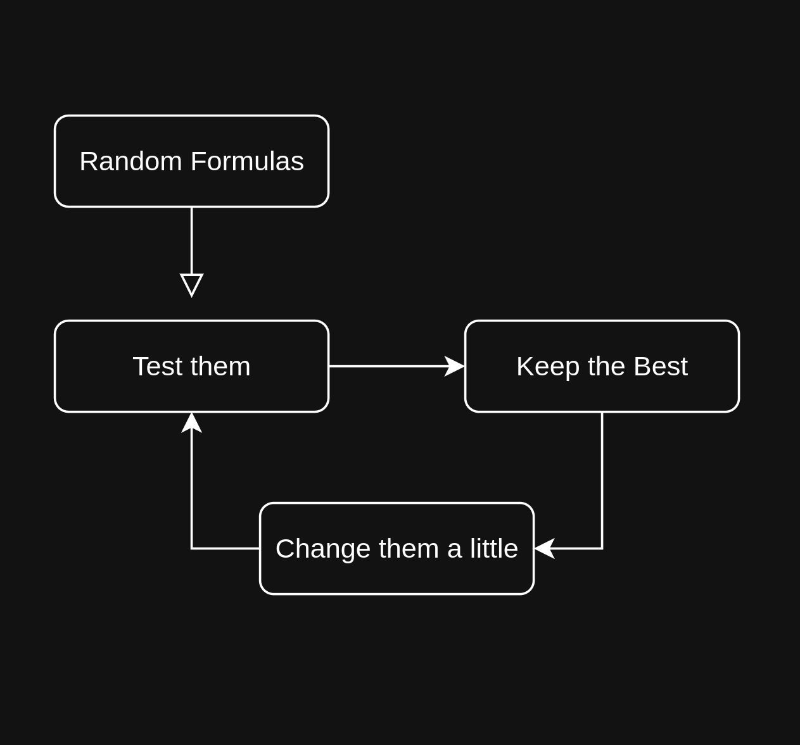

$ whoami
$ whoami📍Troy, Ohio
📍Yellow Springs, Ohio
🎓 BS Computer Science; Ohio University
💼 Data Engineer Consultant

How AI Learns
AI being used for Good
Why Protein Folding Matters
- Opens possiblity of treating cancers, Alzheimer's, Cystic firosis and other deseases
- Personalizes medicine; drugs tailored to your genetics
- Biofuel production
- Improved plastics recycling and breakdown
Why Protein Folding is Hard
AI being used for Evil
Pig Butchering
Demos
What is a Turing test?

https://chat.com/
https://sora.com/